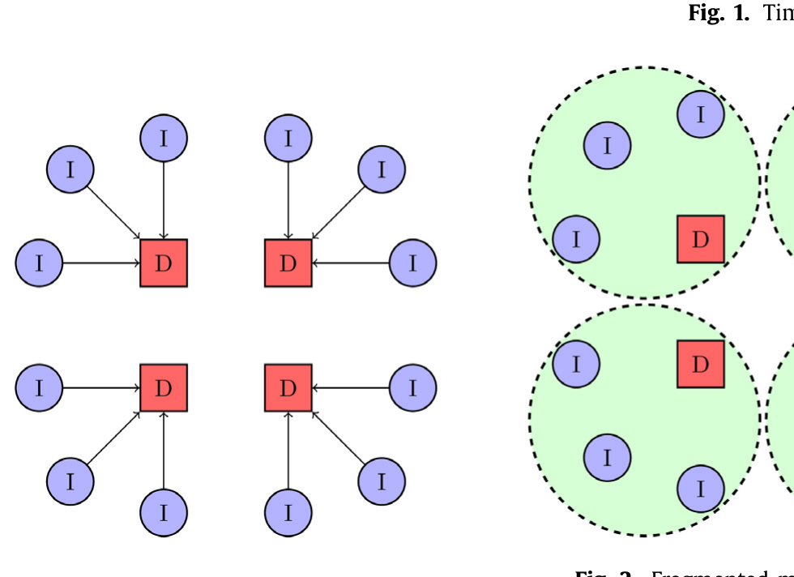
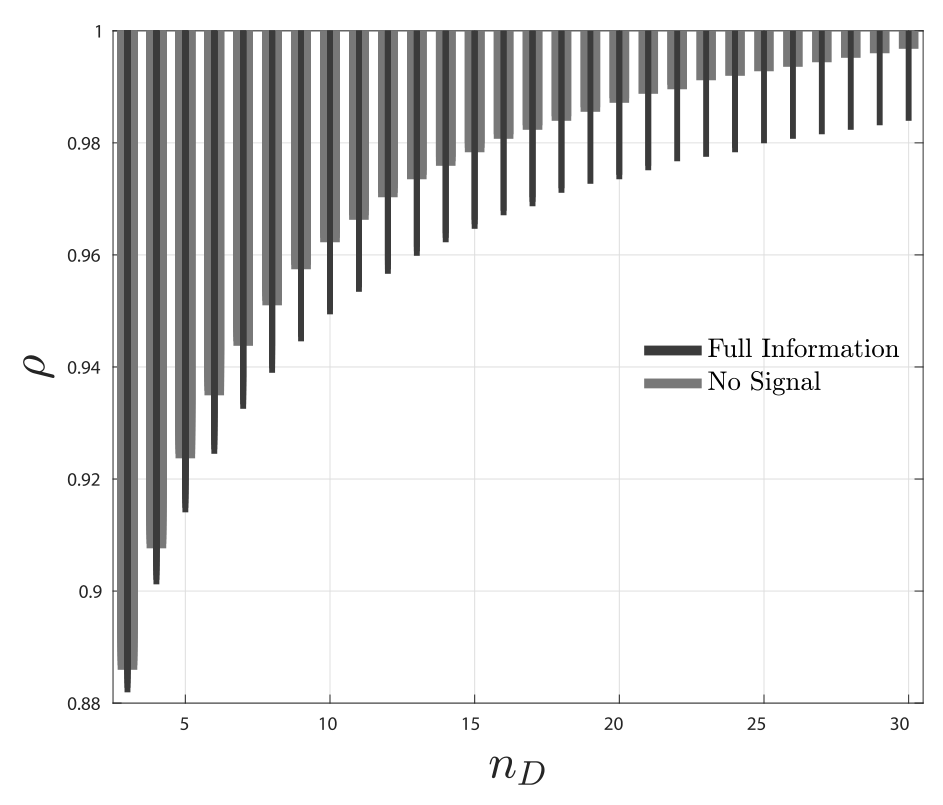
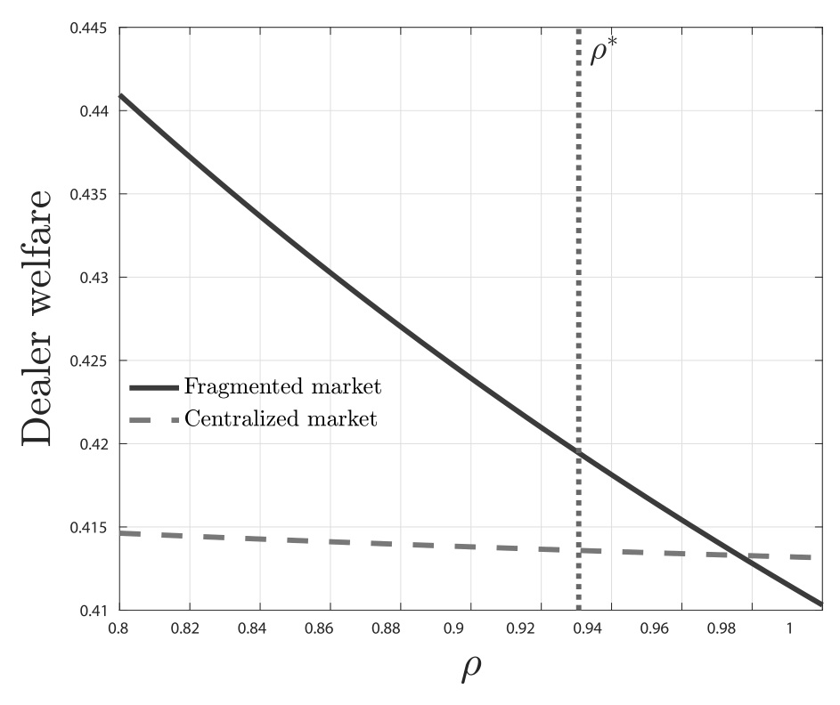
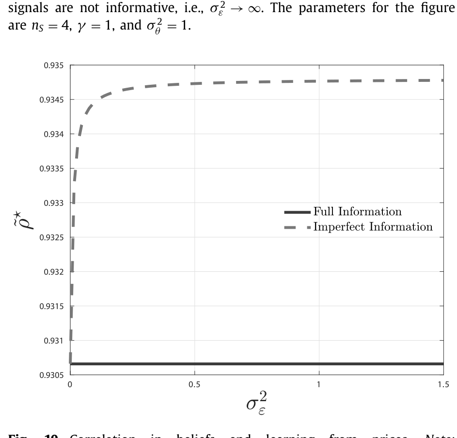
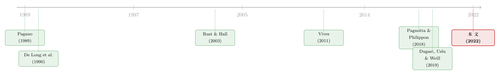

为什么有人偏要去「更差」的市场交易？——把市场分散写回投资者的算盘上
本文读的是 Babus & Parlatore (2022, Journal of Financial Economics)：当投资者之间「分歧很小」时，分散化（fragmented）的市场结构反而能在均衡中存活——投资者宁愿挤进一个更小、价格冲击更大的市场，去换取在和交易商博弈时少一些竞争、多分一块蛋糕。换句话说，市场为什么会碎成一地，答案可能不在交易所的收费、也不在信息不对称，而在投资者自己有多「想法一致」。
1 引言：一个看上去不该成立的选择
先抛一个事实。纽约证券交易所（NYSE）上市的那些股票，真正在 NYSE 成交的只有约 25% 的交易量；剩下的 75%，被摊在另外 12 家交易所、30 多个暗池（dark pool）和各种电子平台上。债券市场更甚：美国约 80% 的投资级公司债交易，是由投资者主动去向交易商「询价」发起的（Bessembinder et al., 2020）；而交易商之间的「内部市场」（interdealer market）成交量，能占到公司债总成交的 70%（Hollifield et al., 2020）。
也就是说，绝大多数金融市场都是碎的。一个资产，本可以集中在一处交易，却偏偏被劈成许多个小场子。这就是市场分散（market fragmentation）。
那么，一个最朴素、却始终没被回答干净的问题是：到底是什么决定了市场的分散程度？
过去的解释，几乎都把矛头指向「卖交易服务的人」——交易所收的费、平台之间抢单的竞争、暗池和明池之间的信息筛选。这些解释有一个共同的隐含前提：如果没有这些摩擦，理性的交易者应该会自发地聚到一个市场里去，因为大市场流动性好、价格冲击小。Pagano (1989) 和 Rust & Hall (2003) 的经典结论正是如此——没有费用、没有交易成本，大家就该扎堆。
可现实偏不是这样。于是 Babus 和 Parlatore 问了一个更尖锐的问题：能不能在完全没有费用、没有信息不对称的世界里，仅凭投资者自己的选择，就让市场碎掉？
这听上去几乎是自相矛盾的。一个更小的市场意味着更高的价格冲击（price impact）、更差的流动性——谁会主动往坑里跳？但这篇论文的回答是：会，而且恰恰是在大家「想法最一致」的时候。 这就是全文要反复讲透的那一个核心。
2 一个三期模型：投资者、交易商，与分歧
要看清这个反直觉的机制，先得把模型的骨架立起来。
模型有三期，\(t = 0, 1, 2\)，两类主体。一类是 \(n_D \ge 3\) 个交易商（dealer），记作 \(\ell = 1,\dots,n_D\)；另一类是 \(n_I = n_S \cdot n_D\) 个投资者（investor），其中 \(n_S \ge 3\) 为整数。资产是零净供给（zero-net supply）的——没有人天生持有，所有交易都是零和的对赌。
两类人的偏好都是「线性—二次」型。交易商不内在地看重这个资产，持有 \(x\) 单位的效用是
$$U_D(x) = -\frac{\gamma}{2}x^2 ,$$
那个二次项可以理解为持有资产的成本（库存风险）。投资者则不同，他们看重资产，持有 \(x\) 单位的效用是
$$U_I(x) = \bar\theta x - \frac{\gamma}{2}x^2 ,$$
这里 \(\bar\theta\) 是资产对某个投资者的价值，在 \(t=2\) 实现。
接着，一个自然的问题是：投资者之间的「分歧」从哪里来？ 论文把它写进了先验信念。每个投资者 \(i\) 对 \(\bar\theta\) 的先验是 \(\bar\theta_i \sim N(\theta_i, \sigma^2_{\bar\theta})\)，而先验的中心
$$\theta_i = \theta + \eta_i, \qquad \theta \sim N(0,\sigma^2_\theta),\quad \eta_i \overset{iid}{\sim} N(0,\sigma^2_\eta),\quad \theta \perp \eta_i .$$
\(\theta\) 是所有人共享的「市场情绪（market sentiment）」，\(\eta_i\) 是各人私有的特异成分。分歧的多少，就藏在 \(\eta_i\) 的方差 \(\sigma^2_\eta\) 里。 为了让它有个干净的刻度，论文用先验之间的相关系数来度量「一致程度」：
$$\rho \equiv \mathrm{Corr}(\theta_i,\theta_j) = \frac{\sigma^2_\theta}{\sigma^2_\theta + \sigma^2_\eta}, \qquad \forall\, i,j \in N_I,\ i \neq j .$$
当 \(\sigma^2_\eta = 0\) 时，\(\rho = 1\)，所有人想法完全一致（无分歧）；当 \(\sigma^2_\eta \to \infty\) 时，\(\rho = 0\)，分歧达到最大。后文里，「分歧」就是 \(1-\rho\)。这种把异质信念写进先验、再用相关系数度量的做法，本身有一脉相承的源头（关于把「分歧」直接搬进资产定价的思路，可参见《你卖出时，谁还在场？——把「需求分歧」写进资产定价》）。
时间线是这样走的。\(t=0\)，在任何异质性实现之前，每个投资者先选一个交易商（最多选一个，但多个投资者可以选同一个）——这一步的选择，决定了整个市场的结构 \(m\)。\(t=1\)，市场情绪 \(\theta\) 揭晓，每个交易商 \(\ell\) 和选了他的那批投资者在一个本地市场（local market）里交易。\(t=2\)，交易商们再到交易商间市场里彼此交易，平掉库存。

Figure 2: Fragmented
关键在于，每个本地市场里的参与者都是有限的，所以人人都有市场势力（market power），下单时都得考虑自己这一笔会怎样推动价格。所有交易都用数量—价格表（quantity-price schedule）来表达——这正是 Kyle (1989) 和 Vives (2011) 那一套需求函数均衡（demand schedule equilibrium）的语言。投资者 \(i\) 选了交易商 \(\ell\)，就写作 \(i \in N_I(\ell)\)；本地市场 \(\ell\) 里有 \(n_\ell\) 个投资者。当每个本地市场都至少有 \(3\) 个市场、且每个市场 \(n_\ell \ge 2\) 个投资者时，我们就说这是一个分散化的市场结构。
3 核心张力：价格冲击 vs 「和交易商分蛋糕」
现在来到全文真正关键的一步。
把视角放到 \(t=1\) 的本地市场清算上。投资者们提交需求 \(X_{1i}\)，交易商提交供给 \(Q_{1\ell}\)，本地价格 \(p^\ell_1\) 让市场出清：
$$Q_{1\ell}(p^\ell_1;\theta) + \sum_{i\in N_I(\ell)} X_{1i}(p^\ell_1;\theta_i) = 0, \qquad \ell \in N_D .$$
每个投资者在 \(t=1\) 解的，是这样一个问题：
$$\max_{X_{1i}}\ \theta_i X_{1i} - \frac{\gamma}{2}X_{1i}^2 - p^\ell_1 X_{1i} ,$$
他把交易商和其他投资者的需求函数当作给定。注意，\(p^\ell_1\) 不是外生的——它随 \(X_{1i}\) 变化，这就是价格冲击的来源。
而站在 \(t=0\) 选交易商时，投资者真正比较的，是不同市场结构下的期望价值：
到这里，那个反直觉的选择就有了可以拆开的两面。
一面是价格冲击。 市场越大，参与者越多，单个投资者的一笔交易对价格的推动越小，价格冲击越低。光看这一项，大市场永远更好——这是「扎堆」逻辑的全部。
另一面，也是真正关键的一步，是「和交易商博弈时的分蛋糕」。 当投资者之间分歧很小（\(\rho\) 高）时，他们对资产价值的看法高度一致，于是会站在市场的同一边——要么都想买，要么都想卖，一起去找交易商要流动性。问题是，大家都站在同一边，彼此之间就形成了对交易商那点流动性的竞争。投资者越多、越同向，交易商越能拿捏自己的位置，把价格往对自己有利的方向压。结果，在更大的市场里，投资者从「和交易商交易」中分到的收益反而更少了。
于是反转出现了：一个更小的市场，价格冲击更高（坏处），但同向竞争的对手更少、能从交易商那里多分一块（好处）。当先验足够相关（\(\rho\) 足够高）时，后者压倒前者，投资者会主动选择更小的市场——市场，就这样碎了。
反过来，如果分歧很大（\(\rho\) 低），投资者们各执一词、买卖分散在两边，本地市场里投资者之间本就能彼此对手成交，对交易商流动性的依赖与竞争都弱。这时「分蛋糕」的好处消失，只剩价格冲击的坏处，大家自然回到大市场——市场集中。
这就是全文的「一个核心」：分散化是低分歧的产物，而不是高分歧的产物。
4 主要结果：低分歧，才有分散
把上面的张力解出来，论文得到几个干净的比较静态结论。
第一，分散化市场结构在分歧足够低时才是均衡。 这是主定理的内核：只有当 \(\rho\) 高过某个门槛，投资者主动选小市场的激励才成立。
第二，可支撑的最大分散度，随先验相关性上升而上升。 论文进一步给模型加了「交易商进入（dealer entry）」的扩展，去问「市场最多能碎成几块」。答案是：最大分散程度随投资者间的分歧下降而上升——大家越是想法一致，市场能碎得越细。如图 9 所示，能支撑对称分散均衡的，是 \((\rho, n)\) 平面上 \(\rho\) 偏高的那一片区域。

Figure 9: shows the combinations of and n for which
第三，分散本身会压低成交量。 论文指出，在控制住分歧程度后，分散化市场的交易量低于集中化市场。也就是说，「在分散市场交易的资产流动性低」这个直觉，一半来自它们本身分歧高、流动性差（高 \(\rho\) 作为低流动性的代理），另一半则是分散结构自己又额外压低了成交。
这里有一个容易绕晕的地方：\(\rho\) 高（分歧低）在论文里既是「分散均衡能成立」的条件，又被解读为资产「内在流动性低」的代理。两者并不矛盾——正是那些大家看法趋同、对手盘稀薄的资产，最容易碎成一堆小场子。
5 交易商间市场，为什么是命门
讲到这里，一个挑剔的读者会追问：这套机制真的稳健吗，还是某个建模假设撑起来的？
论文用两个极端案例做了压力测试，结论很有意思：交易商在交易商间市场里的策略性行为，是分散能存活的必要条件。
- 没有交易商间市场：分散化在分歧低时依然出现。可见 \(t=2\) 的内部市场不是分散的唯一来源，投资者层面的激励本身就够。
- 交易商间市场变得完全竞争：分散瓦解了。一旦交易商之间无法策略性地相互博弈、彼此都成了价格接受者，支撑分散的那块「分蛋糕」收益就被竞争抹平，市场重新集中。
把这两个极端摆在一起，结论就清楚了：正是交易商的市场势力，让分散有了存在的空间。 交易商在 \(t=2\) 解的，是一个干净的库存平滑问题：
$$\max_{Q_{2\ell}}\ -\frac{\gamma}{2}\big(q^\ell_1 + Q_{2\ell}\big)^2 - p_2\, Q_{2\ell},$$
而交易商间市场出清要求 \(\sum_{\ell \in N_D} Q_{2\ell}(p_2;\theta, q^\ell_1) = 0\)。当这个市场不是完全竞争时，交易商能把 \(t=1\) 在本地占到的便宜，部分地保留下来——这才让他们有动机去「容忍」甚至「鼓励」一个碎掉的市场（关于「中间商的存在本身如何重塑均衡」，可参见《承诺去交易：为什么「先卖给中间商」反而能治好柠檬市场》）。
6 福利：交易商可能受益，投资者永远吃亏
那么，市场碎掉，到底是好事还是坏事？这就要看谁在算账。
论文的福利结论是这篇文章最锋利的一句话：
当投资者间分歧足够高时，交易商能从分散化中获益；但投资者，在任何情形下都更偏好集中化市场。

Figure 7: illustrates a dealer’s expected welfare in a
直觉上不难理解。分散化的本质，是投资者用「更差的价格冲击」去换「在和交易商博弈时少一点竞争」。可这场博弈是有对手的——投资者少竞争一点，交易商就多赚一点。站在投资者整体的角度，分散是一场负和的安排：它把蛋糕做小了（成交量下降、价格冲击上升），却没有给投资者带来集体上的好处，好处主要落到了交易商一边。
于是，分散化市场可能是无效率的（inefficient）。这一点对监管很有含义：如果碎片化是投资者个体理性、却集体受损的结果，那么把交易往集中场所引导的政策，未必是在「对抗市场的自然秩序」，反而可能在纠正一个负外部性。
7 当交易商也要「从价格里学」
最后，论文把基准模型里一个很强的假设松开：在基准里，交易商能直接观测到市场情绪 \(\theta\)。现实中显然不行——交易商往往只能从价格里去推断总体情绪。
把「从价格学习（learning from prices）」加进来之后，分散化市场结构仍然可以存活，但投资者去分散市场的激励被削弱了。机制是这样的：当交易商不能直接看到 \(\theta\)、只能从成交价里学时，他对市场情绪的把握更模糊，因此在更大的市场里「拿捏」投资者、压缩他们交易收益的能力也下降了。既然「大市场里收益被压得更少」，那么投资者为了躲避这种压缩而往小市场跑的动机也就更弱。
换个说法：交易商信息越不完全，就需要更高的 \(\rho\)（更一致的信念）或更少的活跃交易商，才能撑起一个对称的分散均衡。

Figure 10: Correlation in beliefs and learning from prices. Note:
文献脉络
把这篇论文放回它生长的那条线上，脉络会清晰很多。
最早的一支，关心的是「交易者会不会自发扎堆」。Pagano (1989) 让交易者在两个交易同一资产的交易所之间选边，Rust & Hall (2003) 让买卖双方在做市商与中间商之间选择——两者的共同结论都是：没有费用和交易成本，大家就该集中。这恰恰是本文要挑战的起点。
第二支，是把市场结构「内生化」、并多半归因于「卖交易服务的人」。Pagnotta & Philippon (2018) 让交易所在撮合速度上竞争，Lester et al. (2015) 让交易商竞相争夺订单流，Baldauf & Mollner (2021)、Cespa & Vives (2021)、Chao et al. (2019) 则让交易所在费率上厮杀——分散，是venue之间竞争的副产品。本文刻意抽掉了venue之间的竞争，让投资者自己来选。
第三支，是异质信念与分歧这条暗线。从 De Long et al. (1990) 的噪声交易者，到 Scheinkman & Xiong (2003) 把过度自信与投机泡沫连起来，再到 Hong & Stein (2007) 对「分歧」的综述——分歧一直是资产定价里的核心变量。本文的新意，是把分歧从「定价」搬到了「市场结构」上。
而最贴近的近邻，是 Dugast, Weill & Uslu (2019)：他们让投资者类型的异质性去决定交易发生在集中还是分散的市场，权衡的是风险分担与中介利润。本文站在它旁边，却换了一组权衡——更小市场里更低的竞争 vs 更高的价格冲击。当前者占上风，市场就碎。这套对需求函数均衡的运用，则一路接着 Kyle (1989)、Vives (2011) 的传统。

评论与延伸（Q&A + 研究方向）
(a) 几个可能的疑问
Q：这和「venue 之间竞争导致分散」的那批模型，根本区别在哪？
区别在分散的「驱动力」放在了谁身上。那批模型（Pagnotta & Philippon, Cespa & Vives 等）把分散归因于交易所/平台在速度、费率上的竞争，市场结构是供给端竞争的结果。本文把供给端的竞争完全抽掉，让投资者在 \(t=0\) 的选择决定结构——分散是需求端策略行为的产物。两条线互补，不是替代。
Q：投资者明明知道小市场价格冲击更高，为什么还往里跳？这不是非理性吗？
恰恰是理性的。小市场的代价（高价格冲击）是真实的，但收益也是真实的：同向竞争的对手少，能从交易商那里分到更大一块。当先验足够相关（\(\rho\) 高），后者压倒前者，选小市场就是个人最优。问题出在它是个人理性、集体受损——这正是福利无效率的来源。
Q：「分歧低反而导致分散」是不是反直觉得过头了？我们直觉里碎市场=众说纷纭。
关键要分清「先验分歧」和「成交对手」。分歧低，意味着投资者站在市场同一边，彼此之间无法对手成交，都得去抢交易商的流动性——于是产生了躲避竞争、分头去小市场的动机。分歧高时，投资者买卖分散在两边，本地就能互相成交，反而没必要碎。直觉的错位，来自把「信念分歧」误当成了「交易方向分歧」。
Q：交易商间市场为什么是命门，能再说直白点吗？
因为支撑分散的那块「分蛋糕」收益，最终要靠交易商在 \(t=2\) 能把 \(t=1\) 占到的便宜保留下来。如果交易商间市场完全竞争，交易商之间互相把价格打到边际成本，便宜留不住，分散就失去了存在的理由——论文显示此时分散直接瓦解。
Q：这个模型能解释公司债市场的两层结构吗？
方向上很贴合。公司债里交易商间成交占到
70%、投资者多通过询价发起交易、且与少数交易商维持长期关系（Hendershott et al. (2020) 记录一个投资者十余年间平均只与6家交易商打交道）——这些都和模型里「投资者选交易商 + 两层交易」的设定对得上。但模型是风格化的，没有搜寻摩擦和信息不对称，落到实证还需要谨慎。
Q：零净供给、二次效用这些假设，会不会把结论「设计」出来？
这是理论模型常见的担心。零净供给保证了纯粹的对赌、剥离了套保需求；线性—二次偏好让需求函数线性、可解析。它们换来了干净的比较静态，但也意味着结论是「机制存在性」的证明，而非定量预测。把它当成一个识别机制的透镜、而非可直接校准的结构模型，更合适。
(b) 几个可能的研究问题与提案
1. 把机制带到公司债的交易商网络上做实证检验。
【经济故事】模型预言：信念越一致（\(\rho\) 高、对手盘越同向）的债券，越容易出现细碎的、投资者—交易商分散撮合的结构，且成交量更低。【可行性】中。可用 TRACE 逐笔成交 + 交易商身份，构造每只债券的「交易商分散度」与成交量；用分析师/卖方预期离散度或买卖订单失衡作为分歧 \(1-\rho\) 的代理。难点在于把「先验分歧」与「流动性内生」分开——需要外生冲击（如指数纳入、评级跨档）来识别。
2. 外资持有人会让市场更碎还是更集中？
【经济故事】外国投资者与本土投资者对同一资产的先验，可能因信息、汇率与监管视角而系统性地不一致——这会拉低 \(\rho\)，按模型应当推动市场更集中。【可行性】中。可在跨境持有的公司债/主权债上，用外资持有份额的变动（如指数纳入引发的被动外资流入）作为对 \(\rho\) 的扰动，检验交易商网络分散度的反应。需要持有人层面数据（如 EPFR、各国托管数据）。
3. 交易商间市场的竞争度，能不能内生地决定一个市场碎到什么程度？
【经济故事】本文把交易商间市场的竞争度当作外生的极端来对比；现实中它本身随交易商数量、集中度而变。一个自然的延伸：让交易商进入与交易商间竞争度同时内生，看分散度如何随之联动。【可行性】低到中（偏理论）。需要在现有框架上加进入成本与内生竞争度，解析解可能不可得，但数值比较静态是可行的。
4. 从价格学习的强弱，是否解释了不同资产类别分散度的差异？
【经济故事】模型第 6 节给出可检验含义：交易商越难从价格中读出情绪（越不透明的资产），越需要更高的 \(\rho\) 才能撑住分散。【可行性】中。可跨资产类别（流动性高的股票 vs 不透明的结构化产品）比较「价格信息含量」与「市场分散度」的关系，价格信息含量可用 Davila & Parlatore (2021) 一类的信息效率度量。识别上需控制资产基本面差异。
5. 分散的福利损失，能不能被量化并对照监管干预？
【经济故事】本文给出「投资者永远偏好集中、分散可能无效率」的定性结论；若能量化这块损失，就能评估把交易引向集中场所的政策收益。【可行性】低。需要把风格化模型校准到某个具体市场（如某类掉期或公司债），对偏好参数与分歧分布做结构估计——数据与识别都很重，doable 但工程量大。
参考文献
- Babus, A., Parlatore, C. (2022). Strategic fragmented markets. Journal of Financial Economics 145(3), 876–908.
- Baldauf, M., Mollner, J. (2021). Trading in fragmented markets. Journal of Financial and Quantitative Analysis 56(1), 93–121.
- Bessembinder, H., Spatt, C., Venkataraman, K. (2020). A survey of the microstructure of fixed-income markets. Journal of Financial and Quantitative Analysis 55(1), 1–45.
- Cespa, G., Vives, X. (2021). Exchange competition, entry, and welfare. Review of Financial Studies, forthcoming.
- Chao, Y., Yao, C., Ye, M. (2019). Why discrete price fragments U.S. stock exchanges and disperses their fee structures. Review of Financial Studies 32(3), 1068–1101.
- De Long, J.B., Shleifer, A., Summers, L.H., Waldmann, R.J. (1990). Noise trader risk in financial markets. Journal of Political Economy 98(4), 703–738.
- Dugast, J., Uslu, S., Weill, P.-O. (2019). A theory of participation in OTC and centralized markets. Working paper.
- Hendershott, T., Li, D., Livdan, D., Schürhoff, N. (2020). Relationship trading in OTC markets. Journal of Finance 75(2), 683–734.
- Hollifield, B., Neklyudov, A., Spatt, C. (2020). Volume and intermediation in corporate bond markets. Working paper.
- Hong, H., Stein, J.C. (2007). Disagreement and the stock market. Journal of Economic Perspectives 21(2), 109–128.
- Kyle, A. (1989). Informed speculation with imperfect competition. Review of Economic Studies 56, 317–355.
- Lester, B., Rocheteau, G., Weill, P.-O. (2015). Competing for order flow in OTC markets. Journal of Money, Credit and Banking S2, 77–126.
- Pagano, M. (1989). Trading volume and asset liquidity. Quarterly Journal of Economics May, 255–274.
- Pagnotta, E., Philippon, T. (2018). Competing on speed. Econometrica 86(3), 1067–1115.
- Rust, J., Hall, G. (2003). Middlemen versus market makers: a theory of competitive exchange. Journal of Political Economy 111(2), 353–403.
- Scheinkman, J.A., Xiong, W. (2003). Overconfidence and speculative bubbles. Journal of Political Economy 111(6), 1183–1219.
- Vives, X. (2011). Strategic supply function competition with private information. Econometrica 79, 1919–1966.